Click Here for Stats (Click Here for More Pictures!) |
Cork Bowl would like to thank WTWO's Jesse Walker for helping out with this year's pregame show for the third straight year. Click Here to visit Cork Bowl's official weatherman. |
Saturday, December 4th - In a year where the number of storylines grew with each passing day, a Dingo team full o
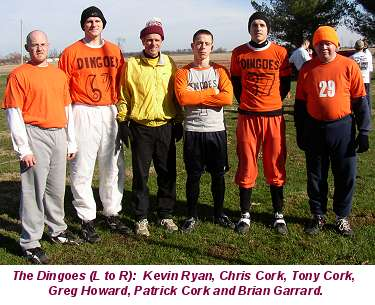
f veterans made all the big plays when it mattered most to come away with a victory in Cork Bowl 14. Brian Garrard's newsworthy return after an 11-year layoff, the field being flipped after a 14-year run heading north-south, 6 man rosters, Greg Howard nearly missing the game and a wet, sloppy field all drew attention heading into the game. However, when the dust finally settled Saturday afternoon, the Dingoes came away with a hard-fought 133-112 victory over the Parameciums. "Every guy on our team stepped up and made a huge play at some point," commented Chris Cork. Whether it was a big catch, a tackle or a knocked down pass, it seemed when a play needed to be made, a Dingo made it. "We had a number of opportunities where we had to convert, but couldn't," responded Paramecium quarterback Kirby Newell. "We had our chances, we just didn't execute."After weeks of wet weather, the skies cleared on Wednesday to set the stage for a beautiful 50 degree day. Despite
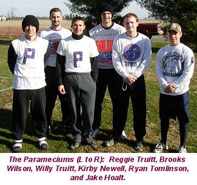
the nice day, the field took a beating as the game wore on. Even with the sloppy field, a handful of Cork Bowl records were broken on Saturday - most of them offensive. Kirby Newell shattered the single-game records for completions and attempts. Newell's 62 completions broke Tony Cork's 1998 mark of 51 and his 92 attempts broke Reggie Truitt's 1997 record of 86. Tony Cork topped his own single-game record of 18 touchdown passes by throwing for 19 scores and topped his own completion percentage of 70% by completing 71% of his throws (51-for-72). Greg Howard obliterated the single-game record for number of tackles with an amazing total of 26 (the previous record was 16). "It was a great day of football," commented Patrick Cork. "It was probably the most competitive, hard-nosed game we've had in a long time. The two teams were about as even as we've ever had them and the outcome came down to about a half dozen plays that were either made or not made." The biggest plays came from Patrick Cork and Greg Howard as the two players shared MVP honors. Cork finished with a game-high 21 receptions and scored 6 touchdowns, and was responsible for 3 huge turnovers on defense - 2 interceptions in the endzone and a forced fumble. Howard had another career day, following last year's MVP effort with a career high 18 receptions and 6 touchdowns. Howard's biggest contribution though was his astonishing 26 tackles. "Greg was everywhere on defense," added Dingo quarterback Tony Cork. "His tackling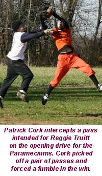
forced their offense to work hard for every yard and it took its toll as the game wore on."The Dingoes won the toss and elected to start with the ball. Tony Cork, fresh off an impressive showing in relief in last year's game, marched the Dingoes down the field completing three consecutive passes capped off with a 10-yard touchdown toss to Chris Cork for a 7-0 advantage. The Parameciums, being led by Kirby Newell, who picked up his first quarterbacking win in last year's Cork Bowl, converted a key 4th and 2 play at midfield. However, on the next play from scrimmage Newell tried to loft a ball to Reggie Truitt, but was picked off by Patrick Cork in the corner of the endzone for the first big play of the game. "I had Reggie open, but I waited a second too long to make the throw," said Newell. "It was just a bad decision and Patrick made a good play." The Dingoes took advantage on the ensuing drive as Tony hit Patrick for 30 yards down the sideline and then found Kevin Ryan open in the endzone for a 14-0 lead.
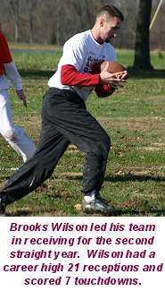
The Parameciums, on what would be the first of many must-score possessions, completed two passes to midfield, but again found themselves with a crucial 4th and 2, and Newell was again able to convert with a 4 yard completion to Willy Truitt. On the next play, Newell hit Brooks Wilson over the middle and Wilson was able to break tackles and force his way into the endzone for the first Paramecium score to cut the lead in half to 14-7. The Dingoes wasted no time getting back on the scoreboard as Tony Cork found Greg Howard for 15 yards and then again on the next play over the middle for a 23 yard touchdown pass for a 21-7 lead. Newell answered by completing back to back passes to Reggie Truitt, and after a pair of dropped passes, Newell found Reggie again in the right flat for a 12 yard score to make the score 21-14. Again, the Dingoes responded quickly with a 20 yard pass to Kevin Ryan followed by a 16 yard touchdown strike to Howard to push the lead back to two scores at 28-14.Newell completed his first two passes of the next possession to get the ball to midfield
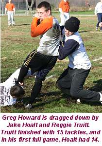
, and on 3rd and 2, another huge play was nearly made by the Parameciums as Newell hit Wilson deep down the right sideline, but Wilson was unable to get both feet down in bounds and the pass was incomplete. On the ensuing 4th and 2 play, Newell tried to hit Willy Truitt on a short out, but Truitt was unable to haul in the pass and the Parameciums turned the ball over on downs at midfield. "That play to Wilson was another huge play that was so close to being converted," added Newell. "If the field was one yard longer we would have only been down by one score, but we ended up giving them the ball at midfield." As he had done every drive in the quarter, Tony Cork wasted no time in leading his team to another touchdown when he hit Patrick Cork for a 20 yard touchdown pass on second down as Patrick was able to beat double coverage for his first touchdown of the game and the Dingoes had their biggest lead of the game at 35-14. The touchdown was the 50th of Patrick's career. The Parameciums again were in desperate need of a score and Newell found Willy Truitt for a 6 yard score as the first quarter came to a close with the Dingoes leading 35-21.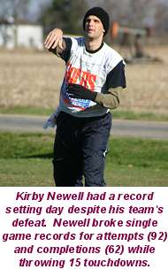
Tony Cork only needed 11 completions in the first quarter to put his team in the endzone 5 times as he completed 11 passes on 15 attempts. Greg Howard had 5 catches and 2 scores in the quarter to lead the Dingoes. The Dingoes were extremely efficient in the quarter running just 15 plays while the Parameciums struggled to move the ball at times. The Parameciums ran 22 plays, but only managed to find the endzone 3 times in part due to 5 dropped passes in the quarter. Newell was 14-for-22 with one interception in the quarter. Willy Truitt had 5 catches and brother Reggie had 4 to lead the Parameciums. "We were really crisp to start the game," added Patrick. "Coach was on fire and we were scoring every drive in 2 or 3 plays. They had a lot of pressure on them to score every time because our offense was clicking out of the gates."The Dingoes started the second quarter right where they left off in the first as Tony completed 3 of 4 passes on the drive finding Patrick open in the endzone for a
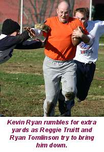
14 yard score and a 42-21 advantage. Again, the Parameciums worked their way down the field converting a 3rd down completion across midfield, and then converting a 4th and goal from the 3 yard line as Newell found Reggie for a touchdown and a 42-28 score. The drive lasted 7 plays as the Parameciums struggled with more dropped passes, but were able to overcome and find the endzone. On the next drive, for the first time in the game, the Dingoes were faced with a 4th down play at midfield, but the Parameciums were unable to make the defensive stand they needed as Patrick Cork rumbled 16 yards for a first down and Kevin Ryan caught a 5 yard touchdown pass on the next play for a 49-28 lead. The Parameciums answered immediately as Newell aired it out for Wilson down the right sideline for a length of the field touchdown on the first play to cut the lead to 14 again at 49-35. Tony Cork completed back-to-back 10 yard passes to Patrick and Howard before finding Howard in the left flat again for his third touchdown of the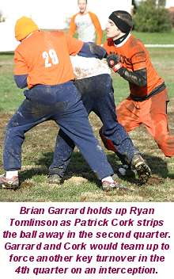
half and a 56-35 lead.The next drive for the Parameciums resulted in another huge swing as Ryan Tomlinson caught a 10-yard pass over the middle, but was held up by Brian Garrard just short of midfield and Patrick Cork ripped the ball away from Tomlinson and returned it all the way to the 1 yard line. Making his first appearance on the offensive side of the ball, Garrard made a diving grab over the middle on the very next play for a touchdown and the Dingoes' lead had swelled to 63-35. "We knew Garrard had the potential to be a two-way threat coming in," replied Patrick Cork. "After he held up Tomlinson to help force the turnover, we had to give him a chance to get a touchdown. Coach made a good throw and G made a great catch."
Down by four scores, the Parameciums switched to the no-huddle offense and scored quickly on a 2 play drive capped off by a 23 yard touchdown reception by Wilson, but the Dingoes struck back quickly again with a 2 play drive of their own as Tony found Chris deep down the middle as Chris was able
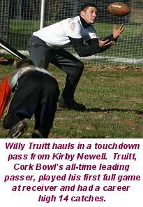
to out-jump Tomlinson for a 30 yard score to push the lead to 70-42. The touchdown drive was the 10th consecutive score the start the game for the Dingoes. "It was like we were playing the Colts," added Kirby Newell. "Unfortunately, we were playing like the Colts defense too and never came close to stopping them." The Parameciums were able to convert a 4th and 8 play on the next drive and later scored on a 2 yard touchdown pass from Newell to Reggie with under 30 seconds to go in the half for a 70-49 score. With 26 seconds left in the half, the Dingoes were looking to go in for yet another score until Tony Cork made his first mistake of the game and it turned out to be a costly one. Trying to find Kevin Ryan near the sideline, Cork overthrew his intended receiver and Brooks Wilson made a one-handed interception and ran it back 25 yards for a touchdown for a huge momentum builder with 16 seconds left in the first half as the Parameciums cut the lead to 70-56. The Dingoes were unable to find the endzone at the end of the half and the halftime lead was 14."You can't begin to describe how much that interception meant to our team," commented Willy Truitt. "We had to work so hard for every one of our scores and were in a position to go into halftime down by 28 points. Instead we were down just 14 and we were getting the ball to start the half." The interception was the first possession for the Dingoes in
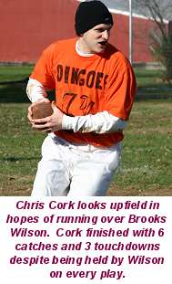
which they failed to find the endzone. Tony Cork was efficient again in the quarter completing 13 of 20 passes for 5 more scores and finished the half 24-for-35 with 10 touchdowns. Patrick was his top target in the quarter with 6 catches. All five Dingo receivers, including Garrard, scored a touchdown in the period. Howard led the team with 9 catches and 3 touchdowns at halftime and Patrick Cork had 8 catches and 2 scores. Newell was a sizzling 14-for-18 with 4 touchdowns in the second quarter with Tomlinson his favorite target with 5 catches. Wilson, Willy and Tomlinson all had 7 receptions in the first half and Reggie had 6. Newell was 28-for-40 in the half with 7 TDs and 1 interception."We felt like we dominated the game offensively and defensively," said Patrick Cork. "We were scoring at will and were forcing them to complete a lot of passes to get their scores. To only be up two scores and with them getting the ball to start the second half, was a little disheartening." The Dingoes scored on every possession but one (not including the two plays run at the end of the half), and forced two turnovers and stopped the Parameciums on downs, but were only up 14.
The Parameciums looked to build on their momentum to start the second half and Newell ran the no-huddle offense to perfection completing 4 of 5 passes and scoring on a short touchdown to Wilson
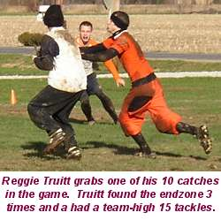
and suddenly the lead was down to 70-63. The three consecutive touchdowns for the Parameciums occurred in just over a minute and a half of game time and the Parameciums were right back in it. The Dingoes were faced with a huge 4th and 6 on the ensuing drive, with the Parameciums one play away from getting a shot to tie the game, but Tony found Patrick again on the play and he was able to break a tackle and take it all the way in for a touchdown for a 77-63 advantage. Newell found Wilson again in the endzone to cut the lead to 77-70, but the Dingoes pushed the lead back to 14 on a great tip-toe catch in the endzone by Chris Cork for an 84-70 score. Two plays later the Parameciums scored again on a Newell to Reggie touchdown for an 84-77 score as they refused to give in. On second down for the Dingoes, Tony tried to force a ball into Kevin Ryan and the ball was batted into the air three times before finally being intercepted by Ryan Tomlinson at midfield and the Parameciums had a shot to tie the game with 9:18 left in the quarter. On the first play, Newell hit Willy Truitt on a short pass in the flat and Truitt was able to shake a tackler and dive into the endzone to tie the score at 84 with 8 minutes to go. It was the first time since the start of the game the Parameciums had tied the score. "It was such an uphill battle," added Newell. "We kept fighting and fighting to get in the endzone and were hoping someone would step up and make a play on defense. Of course, even in my wildest dreams, I didn't think that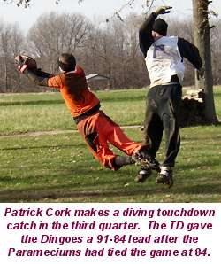
person would be Tomlinson." The Parameciums had spent the last 64 minutes of play trailing.After leading by 4 touchdowns at several points in the first half, the Dingoes were now faced with the possibility of falling behind for the first time on the day. In their first must-score drive of the day, Tony Cork completed 3 consecutive passes, as the drive was capped off by a great diving catch in the endzone by Patrick Cork. "It was yet another play where if the ball is thrown a couple of feet shorter I probably intercept it, but Coach put it right on the money and Patrick made a great catch," added Reggie Truitt. The touchdown gave the Dingoes a 91-84 lead. The Parameciums faced a 4th and 12 on the next possession and attempted to run a trick play as Wilson caught a short pass and lateraled to Reggie Truitt, but Truitt had fallen down on the play and was left scrambling for yards, but managed to fight through a couple of would-be tacklers to stretch the ball over the first down line. Wilson scored two plays later to tie the game once again at 91.
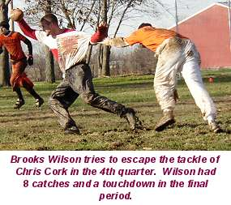
Again, Tony completed three straight passes and found Patrick in the endzone to cap another touchdown drive for a 98-91 lead to end the third quarter.For the first time, the Parameciums outscored the Dingoes in a quarter 35-28. Both quarterbacks continued to stay hot with Tony Cork hitting 12 of 17 passes for 4 touchdowns and Newell completing 14 of 21 with 5 touchdowns. Patrick Cork and Brooks Wilson each had 6 catches and 3 touchdowns in the quarter.
The Parameciums quickly marched down the field once again to start the final period on 4 straight completions by Newell, and on 1st and goal from the 9 yard line, he completed a short pass to Willy Truitt,
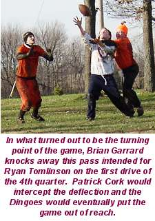
but Truitt was stopped just short of the endzone on a solid tackle by Patrick Cork. The play would turn out to be costly as on 2nd down Newell misfired on a pass intended for a wide open Ryan Tomlinson. On 3rd down from the 1 yard line, Newell tried to force in a short pass to Tomlinson, but Brian Garrard got his hand on the pass, deflecting it into the air and Patrick Cork picked it off and returned it 10 yards. "I didn't know what happened on the play until I saw the replay aftewards," commented Patrick. "I just know the ball got tipped and I was in the right place at the right time. Brian made a great play getting his hand on the ball and we got another bounce to go our way." Tony Cork pounded the ball down the field to Patrick and Greg as Howard scored from 2 yards out to push the lead back to two scores at 105-91 with 18 minutes to play. "We had been hanging on for dear life since Wilson's interception late in the first half," remarked Greg Howard. "We really needed to get a touchdown cushion back to put the pressure back on them. That play by Garrard and Patrick, and our ability to score on the ensuing drive, was a backbreaker for them."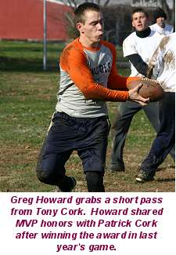
The Parameciums responded with 4 straight completions from Newell capped off by a 6 yard strike to Willy Truitt to cut the lead to 105-98, but as they had done all afternoon, the Dingoes answered right back as Tony Cork went 3-for-3 on the drive, finding Patrick in the endzone for a 4 yard score and a 112-98 lead. The dropped passes reared their ugly heads on the next Paramecium drive as Tomlinson was unable to haul in consecutive passes on 3rd and 4th downs, handing the ball back over to the Dingoes at the 5 yard line. Howard scored again to all but put the game away at 119-98 with 10 minutes remaining. The Parameciums were able to score, but just like all afternoon, it was a struggle, taking them 7 plays to do so as Newell found Tomlinson for his second score of the game to make the score 119-105. Again, Tony Cork completed 4 straight passes and found Howard for his 6th touchdown of the game and a 126-105 advantage. Newell threw 4 consecutive incomplete passes handing the ball back over to the Dingoes at the 2 yard line as Cork found Kevin for another touchdown and a 133-105 lead with just under 2 minutes to go. The Parameciums would tack on
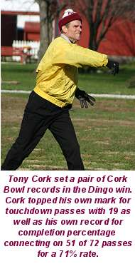
a late Newell to Wilson touchdown for the final score of 133-112."The final score wasn't indicative of how close the game really was," remarked Patrick. "The entire third quarter and most of the fourth quarter was as pressure-packed as I ever remember it in Cork Bowl. Every play had the potential to determine the outcome."
Tony Cork completed 13 of his first 16 passes in the quarter, and 15-of-20 overall in the period for 5 touchdowns - most of them going to his two top targets of the day, Howard and Patrick Cork. Cork grabbed 7 passes and Howard 6 in the 4th quarter. "Every time we needed to get a score, it seemed like the old coach completed 3 or 4 straight passes and led us into the endzone," added Chris Cork. "He had ice in his veins in that 4th quarter." Newell completed 20 of 31 passes in the quarter finding Wilson 8 times. Once the Dingoes got the lead back, they went to a 3-2 zone defense in which Howard dominated. Howard tallied an amazing 11 tackles in the 4th quarter alone. The Dingoes outscored the Parameciums 35-21 in the final frame despite running only 20 plays compared to 31 for the Parameciums. "We finally got back in rhythm like the first half," added Patrick Cork. "They couldn't keep us out of the endzone, and we were making them run 6 or 7 plays every drive to score. I think them playing from behind for almost the entire game finally showed in the 4th quarter. They seemed to be out of gas in the final 15 minutes and a lot of that should be credited to Greg Howard's defense. They had to earn every yard they got all afternoon." The Parameciums trailed for 91 of the 100 minutes in the game.
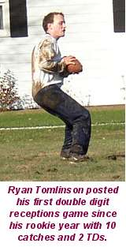
As mentioned, Newell broke records for completions and attempts with his 62-for-92 day for 67%. Just like in last year's victory, he finished with 15 touchdowns and 2 interceptions. Wilson had a career-high 21 receptions, including 14 in the second half, and found the endzone 7 times. Willy Truitt also had a career-high 14 catches and scored 3 touchdowns. Reggie Truitt added 10 catches and 3 touchdowns, Ryan Tomlinson had his first double-digit receiving day since his rookie year with 10 catches and 2 touchdowns and Jake Hoalt had 7 receptions in spot duty on offense.
Tony Cork tied his career-high with 51 completions on 72 attempts for a record 71% completion percentage and set a new Cork Bowl record with 19 touchdowns while throwing 2 interceptions. Patrick Cork led all Dingoes with 21 receptions and 6 touchdowns, while Greg Howard had a career-high 18 receptions and 6 touchdowns. Chris Cork had 6 catches for 3 scores, Kevin Ryan had 5 catches and 3 touchdowns and Brian Garrard scored on his only catch of the game. Defensively, Greg Howard dominated the middle of the field finishing with 26 tackles, breaking the Cork Bowl record by 10 tackles. "That was one of the most impressive individual performances I've ever seen by a player," said Patrick Cork. "I've never seen a player single-handedly keep another team's offense on the field like Greg did. He was absolutely everywhere. With the muddy field, there wasn't much chance to throw passes downfield and Greg was basically playing middle linebacker and running sideline to sideline making tackles on every play." Patrick
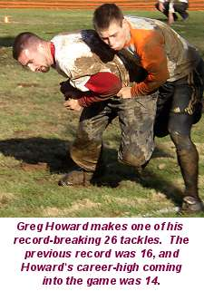
Cork finished with 7 tackles, and made three huge defensive plays picking off 2 passes in the endzone and forcing and recovering a fumble that he returned to the 1 yard line. He was also credited with 4 passes defensed. "Turnovers are always instrumental in winning Cork Bowl," added Chris Cork. "The biggest play of the game was the interception at the one yard line when they were trying to tie the score. After that, we took control of the game. I think that play really demoralized them after they made such a great effort to come back to tie it up." Kevin Ryan had 8 tackles, Chris Cork had 5 and Brian Garrard had 2 tackles and was involved in two of the three turnovers, holding up Tomlinson on the fumble and deflecting the interception in the endzone.Patrick Cork was originally announced as the MVP of the game, but after the final tally in tackles showed Howard with 26, there was no doubt that the honor should be split between the two. "It's hard to think that the MVP award would be given for defense in a game where there were 245 points scored, but the three turnovers Patrick was involved in and Greg's tackling performance won the Dingoes the game," commented announcer Jay Jared. It was Howard's second consecutive MVP award and the fourth for Patrick Cork, and first since he shared the honor with Willy Truitt in Cork Bowl 10.
Reggie Truitt led the Parameciums with 15 tackles and Jake Hoalt, serving primarily as the defensive replacement had a very solid 14 tackles in his debut. Wilson had 6 tackles and an interception returned for a touchdown, Willy Truitt had 2 tackles and Tomlinson finished without a tackle, but did have an interception. Kirby Newell picked up on tackle despite playing only quarterback.
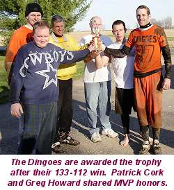
The two teams combined to complete an amazing 69% of their passes. For the first time in Cork Bowl's history, yardage was figured unofficially and the Dingoes outgained the Parameciums 597 to 579. The bend but don't break defense of the Dingoes held the Parameciums to less than 10 yards on an amazing 34 of their 62 completions. In contrast, only 15 plays by the Dingoes gained less than 10 yards. The Dingoes averaged 11 yards per completion compared to only 9 yards for the Parameciums. "It may not sound like much, but two yards more on every completion over the course of the game is huge," remarked Tony Cork. The Dingoes scored 19 touchdowns on 72 plays (a score every 3.8 plays) compared to 15 offensive scores for the Parameciums on 92 plays (one score every 6.1 plays).
"Our goal from the opening snap was to force them to complete 4 or 5 passes if they wanted to score," added Patrick Cork. "We didn't want to allow any big plays and with the field as muddy as it was, they had no choice but to look underneath every single time. I think our game plan worked perfectly considering they ran 20 more plays than we did, but we scored 4 more offensive touchdowns. Their dropped passes really hurt them at critical points too." The Parameciums were credited unofficially with 13 dropped passes in the game while the Dingoes had only 7. "We were constantly in 3rd and 4th down situations," observed Newell. "You can't expect to convert every time in those situations. We put too much pressure on ourselves by dropping passes or missing open receivers." The Parameciums had 9 fourth down plays in the game, converting on 6 of them.The Dingoes never turned the ball over on downs in the game, converting on all 4 of their 4th down plays - all on receptions by Patrick Cork. "Patrick was really big on 4th down," said Jay Jared. "Every time they needed a big catch Tony looked to Patrick. Coach was in complete control of the game from start to finish. At no point in the game did the Dingoes struggle to move the ball. It was quite a show of offensive execution."
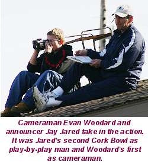
For the first time in 4 years, the losing team was able to top 100 points as the Parameciums tallied 112. The 133 points scored by the Dingoes was the highest total since the Wombats scored 142 points in Cork Bowl 8. Coincidentally, that team consisted of Tony, Chris and Patrick Cork and Greg Howard as well. In that game, Tony Cork had a nearly identical stat line (51 completions, 18 touchdowns and 2 interceptions). Even more amazing was that was the only other game Jay Jared announced. "If the old coach is going to throw like that and we're going to win by 3 scores again, we'll have Jay back every year," concluded Patrick.Cork Bowl's big 15th anniversary game will be played next November. "It's hard to believe we've been going this long," thought Commissioner Patrick Cork. "When we started this back when I was 12 years old, I had no idea we'd still be going, but we are. It's a testament to the guys that take the field every year that keep coming back for more punishment. We are working on plans for a big celebration next year, but we can't give out details until everything is finalized. Check back in August to see what we have planned."
Cork Bowl 14 Game Notes:
Patrick Cork's 21 receptions and 6 touchdowns gives him 164 catches and 55 touchdowns in his career...Brooks Wilson has increased his reception total in each of his four career games (6, 13, 14, 21)...The Dingoes were not stopped on downs the entire game, scoring on 19 of their 22 possessions (2 interceptions and the end of the first half)...Greg Howard nearly doubled his career high in tackles with 26 (previous high was 14)...Reggie Truitt now has a league-high 98 tackles in his career...Patrick Cork is tied for the league-high with 13 forced turnovers in his career (7 interceptions, 6 forced fumbles)...Tony Cork moved into second place all-time in passing with 176 completions and 59 touchdowns...Chris and Patrick Cork have combined to catch 100 touchdown passes in their careers (55 for Patrick, 45 for Chris)...Greg Howard is just 4 receptions shy of catching Kirby Newell for #3 all-time (Newell had 83 in 6 seasons)...Howard's 26 tackles in one game are more than the career totals of all but 8 Cork Bowl players...
(Click Here for More Pictures!)